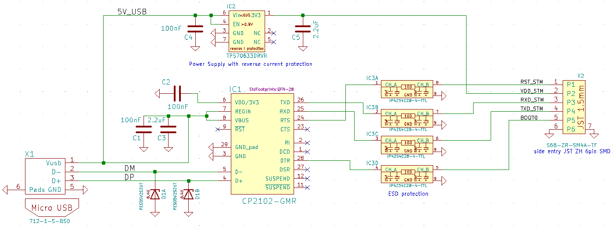

Lobaro USB configuration adapter

The USB configuration adapter can be used for:
- Sensor initial configuration
- Firmware log diagnostics
- Firmware updates
using our free Lobaro Maintenance Tool PC software.
Note
The blue wire is not consistent the RTS pin and may be on some adapters inverted, e.g. beeing the GND wire. Check the orientation of the adapter with the picture above to determinate the acutal pins and do not rely on the the wire color coding.
Driver Download
The adapter uses a CP2102 USB to UART bridge internally. The driver is available for free download and must be installed prior first use:
CP2102 Driver Download (MacOS, Windows, Linux)
Hardware Connection (LoRaWAN Sensors)
Boot0of the Lobaro LoRa Hardware (STM32 based) is connected toDTRof the UARTReset(active low) of the Lobaro LoRa Hardware (STM32 based) is connected toRTSof the UART
Normally the handling of these uart control is done internally by the Lobaro PC tool.
When using any other uart terminal make sure you control RTS and DTR of the UART correctly or cut the DTR/RTS wires from the USB adapter connection if not needed.
DTR control line
Low / true=> Run Firmware after Reset (Default since BOOT0 has internal pull-down)High / false=> Run Bootloader after Reset
RTS control line
High / false=> Run Firmware / Bootloader (Default since RESET has internal pull-up)Low / true=> Chip in RESET mode (not running)
Adapter Schematic
{kind=link}
